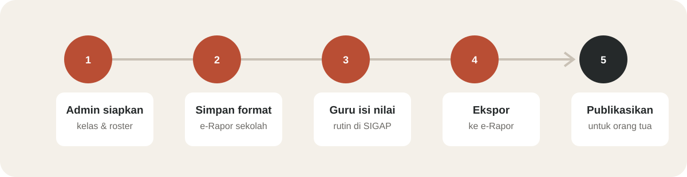
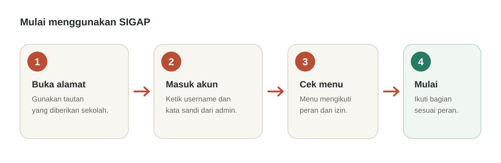
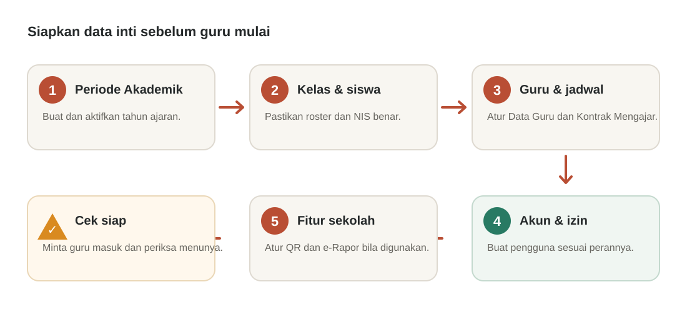
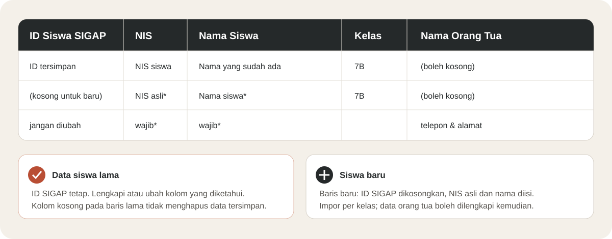
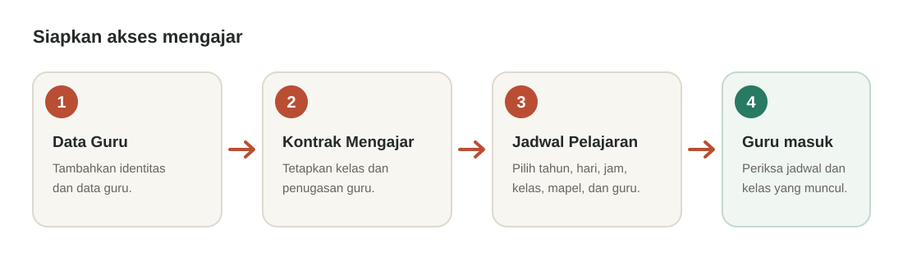
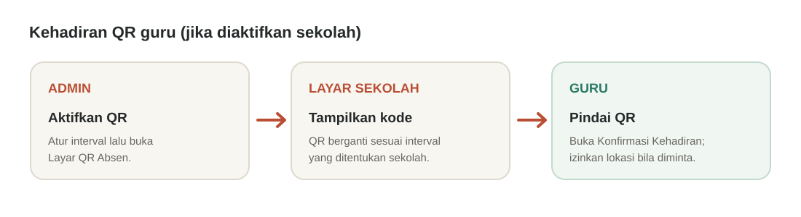
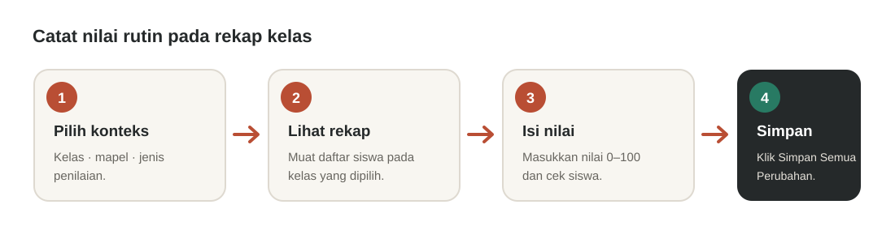
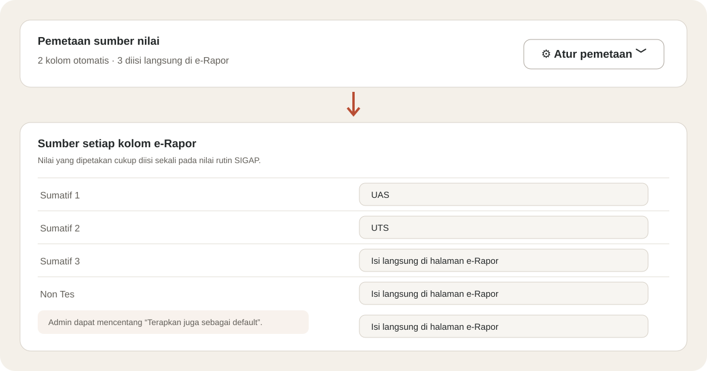
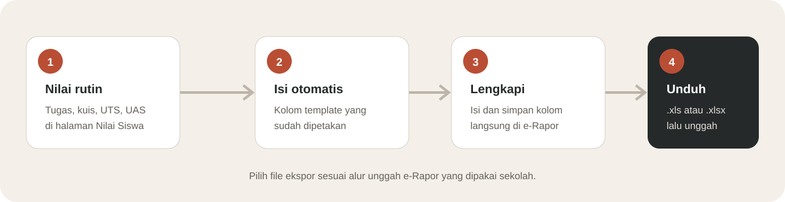
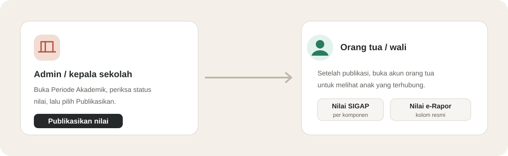

Panduan Memulai
Panduan praktis pengguna baru dari persiapan akun sampai informasi nilai sekolah diterima orang tua.

Edisi Oktober 2026 · 15 halaman · Untuk administrator, guru, kepala sekolah, dan orang tua/wali. Mencakup pengelolaan siswa, nilai, dan e-Rapor SMP 2025.2.
Langkah pertama
Mulai dengan alamat dan akun yang diberikan sekolah.

Ilustrasi alur awal · alamat masuk tiap sekolah dapat berbeda.
Periksa ejaan, huruf besar/kecil, dan pastikan akun masih aktif.
Jangan menggunakan akun orang lain. Simpan kata sandi dengan aman.
Mengenali tampilan
Peran membantu menentukan pekerjaan dan menu yang tersedia untuk setiap akun.
| Peran | Menu awal | Kegiatan utama |
|---|---|---|
| Administrator | Dashboard | Menyiapkan data, akun, penugasan, dan fitur sekolah. |
| Guru | Dashboard / Jadwal Mengajar | Mengisi jurnal, presensi siswa, dan nilai kelas yang diampu. |
| Kepala sekolah | Dashboard / Pengawasan Sekolah | Memantau kegiatan serta publikasi sesuai izin. |
| Orang tua/wali | Dashboard | Melihat informasi siswa yang tertaut. |
Profil Sekolah · Periode Akademik · Mata Pelajaran · Kelas & Siswa · Data Guru · Kontrak Mengajar · Jadwal Pelajaran · Pengguna · Peran & Hak Akses.
Dashboard/Jadwal Mengajar · Jurnal Mengajar · Absensi Siswa · Nilai Siswa · Konfirmasi Kehadiran bila fitur aktif dan izin tersedia.
Dashboard, Pengawasan Sekolah, Periode Akademik, dan laporan sesuai izin.
Dashboard, Nilai, Kehadiran, dan informasi anak yang terhubung.
Administrator · dasar sekolah
Tahun ajaran aktif menjadi konteks untuk penugasan, jadwal, dan nilai.

Publikasi nilai dilakukan setelah penilaian diperiksa, bukan saat membuat tahun ajaran.
Administrator · data master
Pastikan daftar kelas dan mata pelajaran tersedia sebelum mengimpor siswa atau menyusun jadwal guru.
Periksa tahun ajaran aktif, data kelas, dan izin akun admin.
Periksa daftar Mata Pelajaran dan penugasan kelas/mapel sebelum mengisi nilai.
Setelah master kelas dan mapel siap, lanjutkan dengan impor roster pada bagian berikutnya.
Administrator · data siswa
Pilih template sesuai pekerjaan. File data kelas mempertahankan identitas siswa lama.
Buka kelas lalu unduh data kelas (.xlsx). File sudah memuat siswa yang tersedia dan ID Siswa SIGAP.
Unduh template Excel (.xlsx) atau CSV. XLSX lebih mudah diedit karena kolom sudah tertata.

Ilustrasi tabel roster · kolom kosong pada siswa lama yang tidak diedit tidak menghapus data tersimpan.
Administrator · guru dan akses
Empat bagian ini saling berhubungan, tetapi menyimpan data yang berbeda.

Urutan kerja admin · sesuaikan dengan hak akses akun sekolah.
Identitas guru, seperti nama dan data pegawai.
Penugasan guru pada kelas atau tanggung jawab tertentu.
Hari, jam, kelas, mapel, dan guru pada satu sesi.
Akun untuk autentikasi dan hak akses aplikasi.
Kehadiran guru
Sekolah dapat menggunakan QR sebagai alur konfirmasi hadir guru. Fitur ini terpisah dari jurnal, presensi siswa, dan nilai.

Konfirmasi QR hanya digunakan bila sekolah mengaktifkan fitur ini.
Guru · jurnal mengajar
Jurnal mencatat materi pada satu sesi jadwal dan menyimpan presensi siswa untuk sesi tersebut.
Periksa kelas dan jadwal yang ditugaskan. Pastikan sesi sudah berlangsung.
Pengisian susulan hanya tersedia bila syarat kehadiran hari tersebut terpenuhi.
Gunakan menu Absensi Siswa untuk melihat atau mengelola catatan kehadiran sesuai izin akun. Jurnal menjadi sumber presensi per sesi; periksa tanggal, kelas, dan status sebelum mengubah catatan.
Guru · nilai siswa
Pakai halaman rekap untuk mencatat tugas, kuis, ulangan, dan komponen lain yang digunakan sekolah.

Simpan nilai setelah memeriksa nama siswa dan jenis penilaian.
Mencatat perkembangan belajar, seperti tugas harian, kuis, UTS, atau UAS.
Mengikuti template resmi. Kolom tertentu bisa dipetakan untuk mengambil nilai rutin.
Komponen dan bobot dikonfigurasi untuk tahun ajaran. Nilai rutin SIGAP berbeda dari nilai resmi e-Rapor kecuali kolomnya dihubungkan lewat pemetaan.
Administrator · e-Rapor
Template memberi SIGAP struktur kolom dan roster untuk satu kelas, mapel, dan semester.
Dapat dipakai untuk menyimpan struktur tanpa mengimpor nilai.
Nilai pada file yang diunggah juga dapat masuk ke SIGAP.
Jangan mengubah header, ID mapel, ID anggota rombel, atau struktur yang dibutuhkan e-Rapor. NPSN dicocokkan jika profil sekolah menggunakannya.
Sumber nilai e-Rapor
Tentukan apakah kolom mengikuti nilai rutin SIGAP atau akan diisi langsung oleh guru.

Klik Atur pemetaan untuk membuka pilihan sumber.
Pilih jenis nilai seperti UAS. Nilai kolom e-Rapor mengikuti nilai sumber tersebut.
Pilih Isi langsung di halaman e-Rapor bila nilainya akan diketik di tabel e-Rapor.
Cakupan default dapat berupa semua mapel pada tahun ajaran/semester itu atau mapel ini pada semua kelas di semester itu. Pemetaan khusus pada sebuah template masih bisa menjadi pengecualian.
Mengganti sumber tidak memindahkan nilai lama. Periksa nilai lama sebelum menyimpan pemetaan baru.
Guru · ekspor e-Rapor
Pilih template yang benar, lengkapi kolom langsung, lalu unduh file untuk alur unggah sekolah.

Berkas ekspor menggabungkan nilai otomatis dan kolom yang diisi langsung.
Unduh format berdasarkan template sekolah yang tersimpan.
Unduh workbook Excel modern jika format ini dipakai sekolah.
Publikasi dan akses keluarga
Publikasikan nilai hanya setelah sekolah meninjau kelengkapan dan ketepatan data.
Buka Dashboard atau Pengawasan Sekolah. Setelah nilai ditinjau, buka Periode Akademik, pilih tahun ajaran, lalu klik Publikasikan jika memiliki izin. Gunakan Tarik Publikasi bila nilai harus disembunyikan untuk pemeriksaan.
Masuk dengan akun sekolah, buka Dashboard, pilih anak yang tertaut, lalu buka Nilai atau Kehadiran. Nilai rutin SIGAP dan Nilai Resmi e-Rapor tampil sebagai bagian berbeda.

Orang tua menerima notifikasi saat nilai dipublikasikan.
Periksa izin akun; kepala sekolah hanya dapat menjalankan tindakan yang diberikan.
Minta admin mengecek tautan akun orang tua ke siswa. Jangan menautkan siswa sendiri.
Bantuan cepat
| Kendala | Langkah yang dilakukan |
|---|---|
| Tidak bisa masuk/menu hilang | Periksa username; minta admin memeriksa akun, peran, izin, dan status aktif. |
| Kelas atau jadwal kosong | Periksa tahun aktif, master kelas, Kontrak Mengajar, dan Jadwal Pelajaran. |
| Tidak bisa mengisi jurnal/nilai | Konfirmasi kehadiran jika diwajibkan; admin memeriksa izin dan penugasan. |
| File e-Rapor ditolak | Cocokkan kelas, mapel, semester, NPSN jika dipakai, ukuran, ekstensi sebenarnya, dan struktur. |
| Nama/jumlah siswa berbeda | Samakan roster; pastikan NIS asli benar. Jangan menyamakan ID SIGAP dengan ID rombel. |
| Nilai e-Rapor kosong | Periksa pemetaan dan nilai sumber; kolom Isi langsung harus dilengkapi. |
| Orang tua belum melihat nilai | Pastikan akun tertaut ke siswa yang benar dan nilai sudah dipublikasikan. |
Admin sebelum mulai: periode aktif · kelas/mapel/roster siap · guru dan jadwal benar · akun dan izin tersedia.
Guru sebelum selesai: jadwal benar · jurnal/presensi tersimpan · nilai tersimpan · kolom e-Rapor langsung lengkap bila perlu.
Sebelum ekspor/publikasi: roster cocok · kelas/mapel/semester benar · nilai telah diperiksa · file ekspor dibuka sekilas.
Panduan semua menu: Manual Book SIGAP. Alur e-Rapor paling singkat: Panduan Cepat.